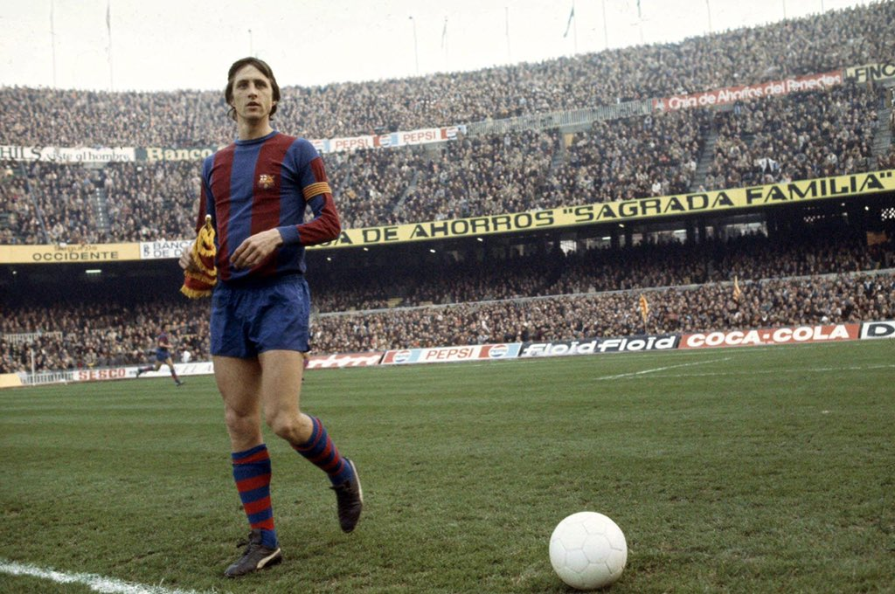
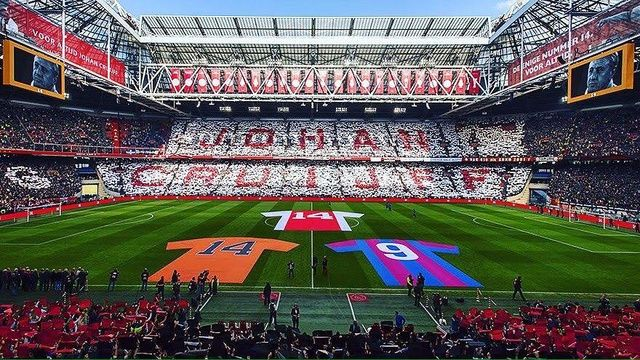

JOHAN CRUYFF
le << Hollandais violant >>

Johan Cruyff sur la pelouse du Camp Nou, alors inaugurée à peine dix ans avant sa venue
Hendrik Johannes Cruijff, dit Johan Cruyff ou Johan Cruijff, né le 25 avril 1947 à Amsterdam et mort le 24 mars 2016 à Barcelone, est un footballeur international néerlandais, qui évoluait au poste de milieu offensif ou d'attaquant, avant de devenir entraîneur.

Palmarés
- Finaliste de la Coupe du monde en 1974 contre la RF Allemagne(Pays-Bas).
- Trois fois vainqueur de la Coupe d'Europe des clubs champions, en 1971, 1972 (2 buts en finale) et 1973, finaliste en 1969 contre l'AC Milan (Ajax Amsterdam).
- Vainqueur de la Coupe intercontinentale en 1972 (Ajax Amsterdam).
- Vainqueur de la Super Coupe d'Europe en 1972 (Ajax Amsterdam).
- Neuf fois champion des Pays-Bas, en 1966, 1967, 1968, 1970, 1972, 1973, 1982, 1983 (Ajax Amsterdam) et 1984 (Feyenoord).Champion d'Espagne en 1974 (FC Barcelona).
- Cinq fois vainqueur de la Coupe des Pays-Bas, en 1967, 1971, 1972, 1983 (Ajax Amsterdam) et 1984 (Feyenoord).
- Vainqueur de la Copa del Rey (Coupe d'Espagne) en 1978 (FC Barcelona).
- Trois fois Ballon d'Or France Football, en 1971 (Ajax Amsterdam), 1973 (Ajax Amsterdam et FC Barcelona) et 1974 (Pays-Bas et FC Barcelona).
- Deux fois meilleur buteur du Championnat des Pays-Bas, en 1967 (32 buts) et 1972 (25 buts), deuxième en 1971 (21 buts), troisième en 1969 (26 buts) et 1970 (23 buts) (Ajax Amsterdam).
- Deux fois "meilleur joueur des Etats-Unis", en 1979 (Los Angeles Aztecs) et 1980 (Washington Diplomats).
- 215 buts pour 307 matches en Championnat des Pays-Bas.
- 48 buts pour 140 matches en Championnat d'Espagne.
- 25 buts pour 53 matches en Championnat NASL des Etats-Unis.
- 48 sélections, 33 buts de 1966 à 1977 (34 fois capitaine).
- Avril 1957 : Cruyff rejoint le club de jeunes de l'Ajax dans les divisions football et baseball, et joue au baseball jusqu'à l'âge de 15 ans, après quoi il choisit de se concentrer sur le football.
- Novembre 1964 : Cruyff rejoint pour la première fois l'équipe première de l'Ajax.
- Juin 1973 : est transféré au FC Barcelone pour la somme de 2 millions de dollars).
- Juin 1985 : est revenu entraîner l'Ajax
- revenu à Barcelone pour la saison 1988-89, assumant cette fois son nouveau rôle d'entraîneur de l'équipe premièr.